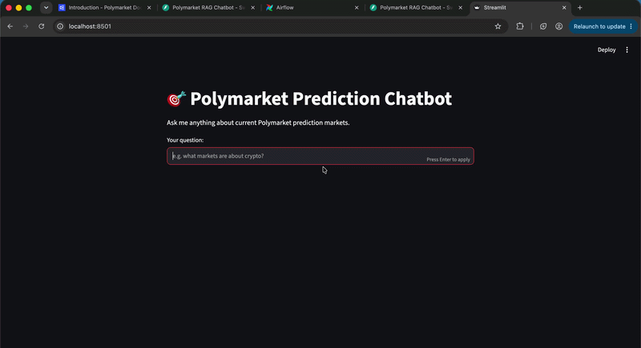
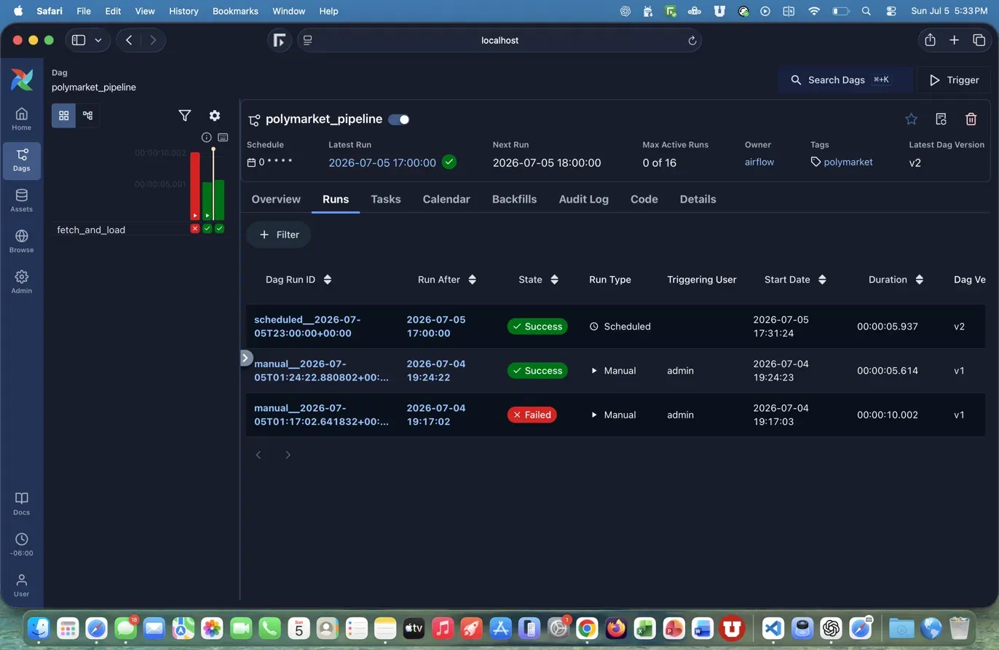
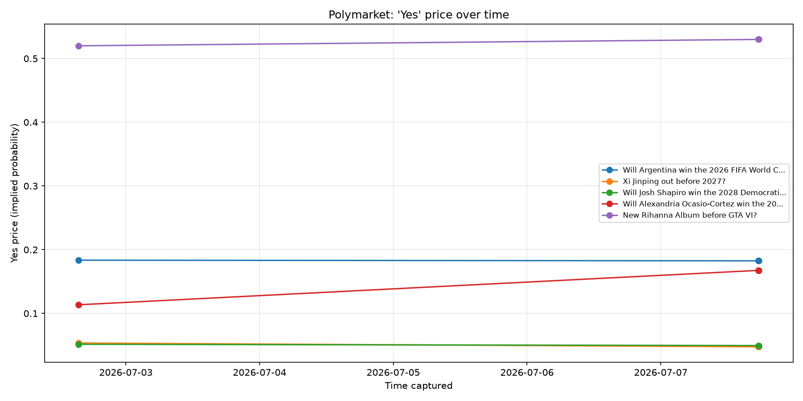

I set myself a structured two-week sprint to move from analyzing data to building the systems behind it. The result: two connected projects — an automated data pipeline and a RAG AI chatbot that answers questions over its data in plain English.
The chatbot takes a plain-English question, finds the most relevant prediction markets by meaning, and generates a grounded answer using only that data.

As an analyst, I lived downstream of the data — cleaning it and charting it after someone else had moved it. I wanted to own the whole stack: the pipeline that collects and transforms data automatically, and the AI layer that makes it useful without a analyst in the loop.
So I picked a live, messy, real-world data source — the Polymarket prediction-market API — and gave myself two weeks to build an end-to-end system from scratch, learning each tool by shipping with it rather than just watching tutorials.
The Polymarket API only shows the current state of each market — there is no price history. So I built a pipeline that captures a snapshot every hour, building a time-series history that doesn't otherwise exist.


The AI model knows nothing about this specific data. So instead of asking it directly, the app first retrieves the most relevant markets from a vector database, then hands them to the model to generate a grounded answer. Retrieval matches by meaning, not keywords — asking about "crypto" surfaces Bitcoin markets even though they never use the word.
The pipeline feeds the chatbot: the cleaned current-price table built by dbt is the exact data the chatbot embeds and answers from. That connection — owning both the data engineering and the AI layer on top — is the definition of the role I'm building toward.
API ingestion, warehousing in DuckDB, SQL data modeling with dbt (window functions, deduplication), and pipeline orchestration and scheduling with Apache Airflow — including debugging real failures from task logs.
A RAG pipeline with semantic search over embeddings and a Chroma vector database, grounded generation with an LLM, served through a FastAPI endpoint and a Streamlit UI, all containerized with Docker.
The natural next step is scale and cloud: processing the same data with PySpark, and deploying the pipeline and chatbot on AWS. I'm treating this project as a living foundation I keep building on, not a finished demo.
Every line, every commit, and a full README documenting both parts.
View repository ↗